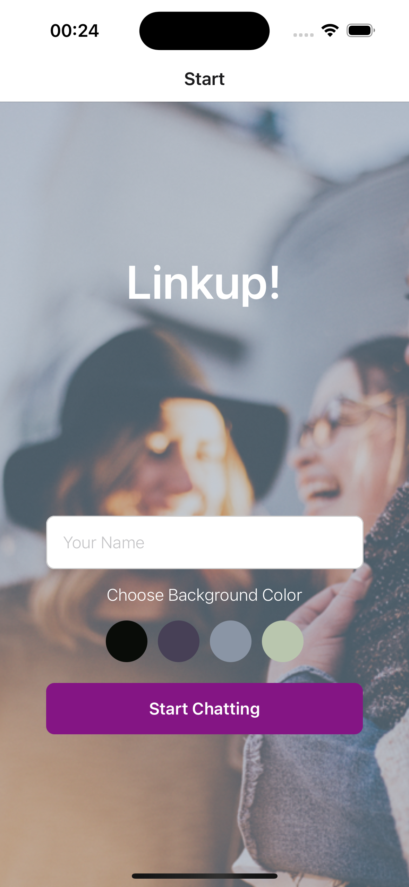
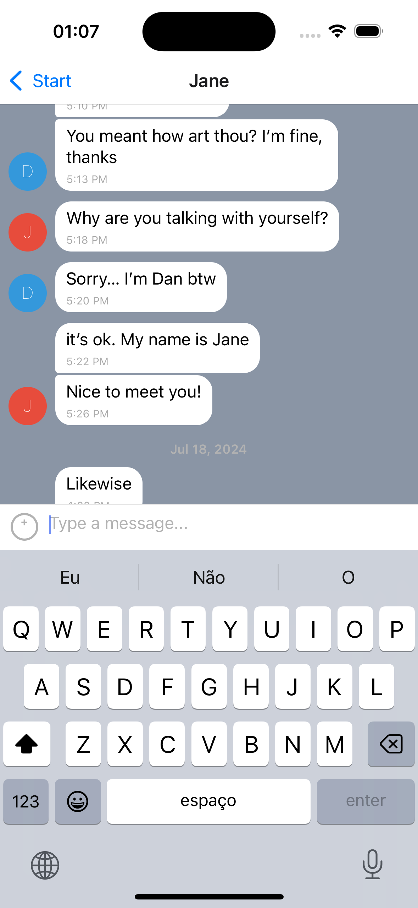
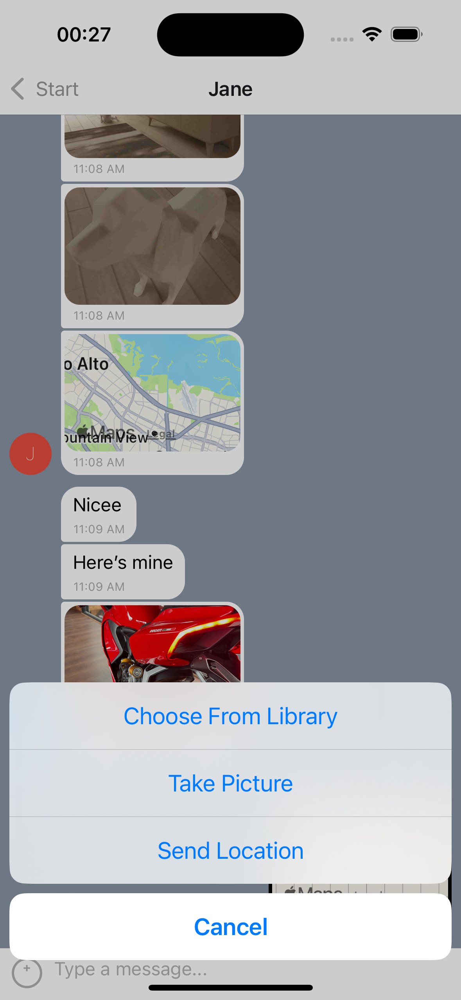
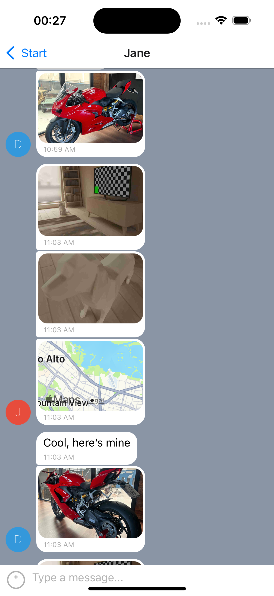

Linkup is a mobile application designed to connect people through chat, fostering friendships and new relationships. Whether you want to connect with new friends or start conversations with potential partners, Linkup provides a platform for meaningful interactions in a visually appealing and user-friendly environment.
I led the full-stack development of Linkup, focusing on user authentication, real-time messaging with Firebase, and seamless offline support. I also implemented media sharing and customization options to enhance the chat experience.
This project taught me how to handle real-time messaging efficiently, ensure offline functionality with local storage, and manage user permissions for media sharing and location services. I also improved my skills in creating responsive and intuitive mobile interfaces using React Native.
One of the main challenges was managing the app's real-time features in environments with poor network connectivity. I solved this by implementing caching mechanisms using AsyncStorage and ensuring that Firebase operations resumed smoothly once the connection was restored.
For future iterations, I plan to add advanced chat features like message reactions, voice messages, and enhanced user profile customization. I would also like to implement end-to-end encryption for enhanced privacy and security.
Github Repository: https://github.com/yourusername/LinkupChatApp
The visual representation of the Linkup phone application, showcasing the main interface and key features.